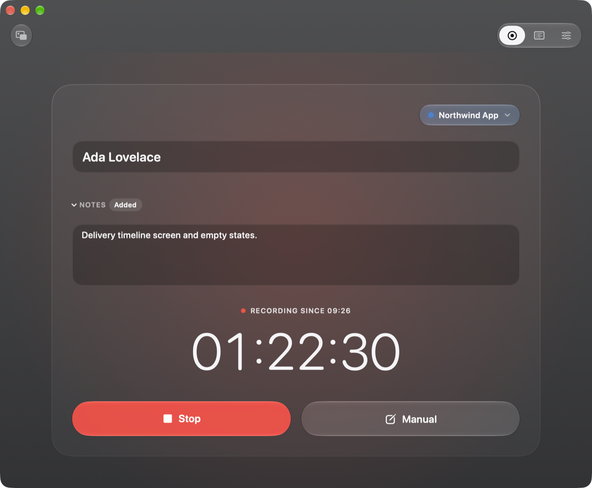
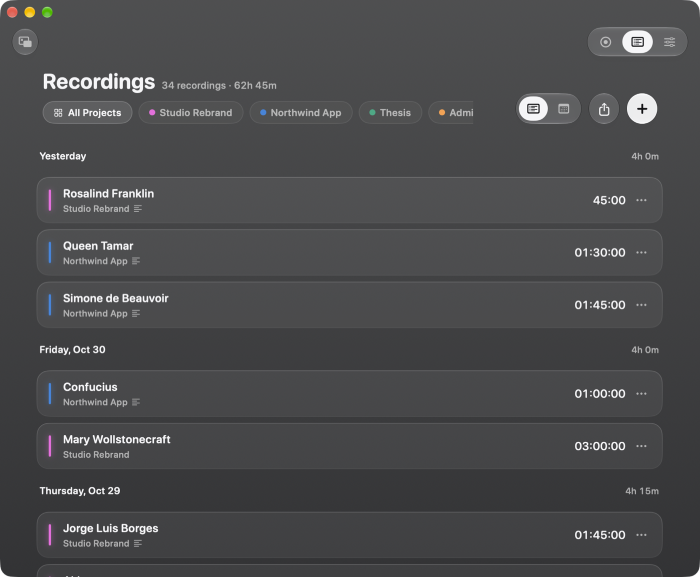
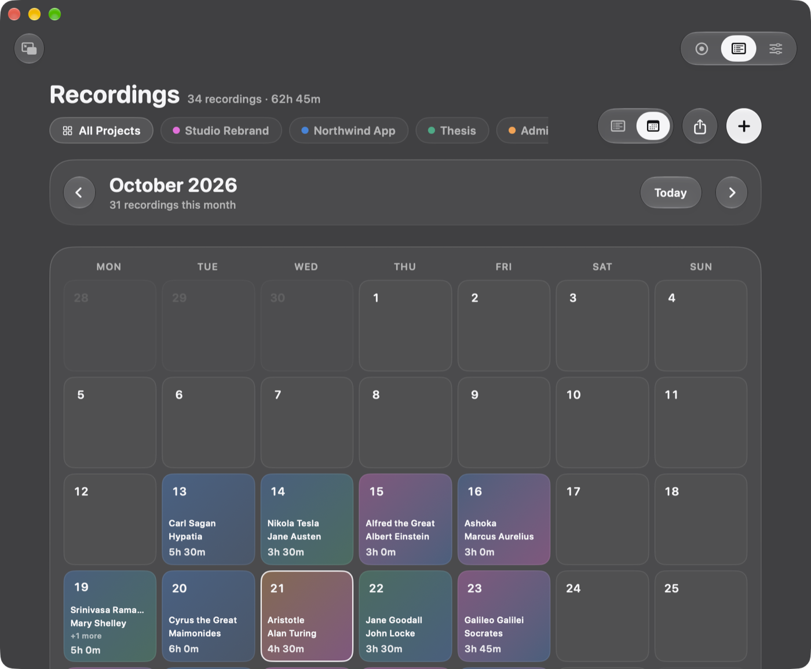
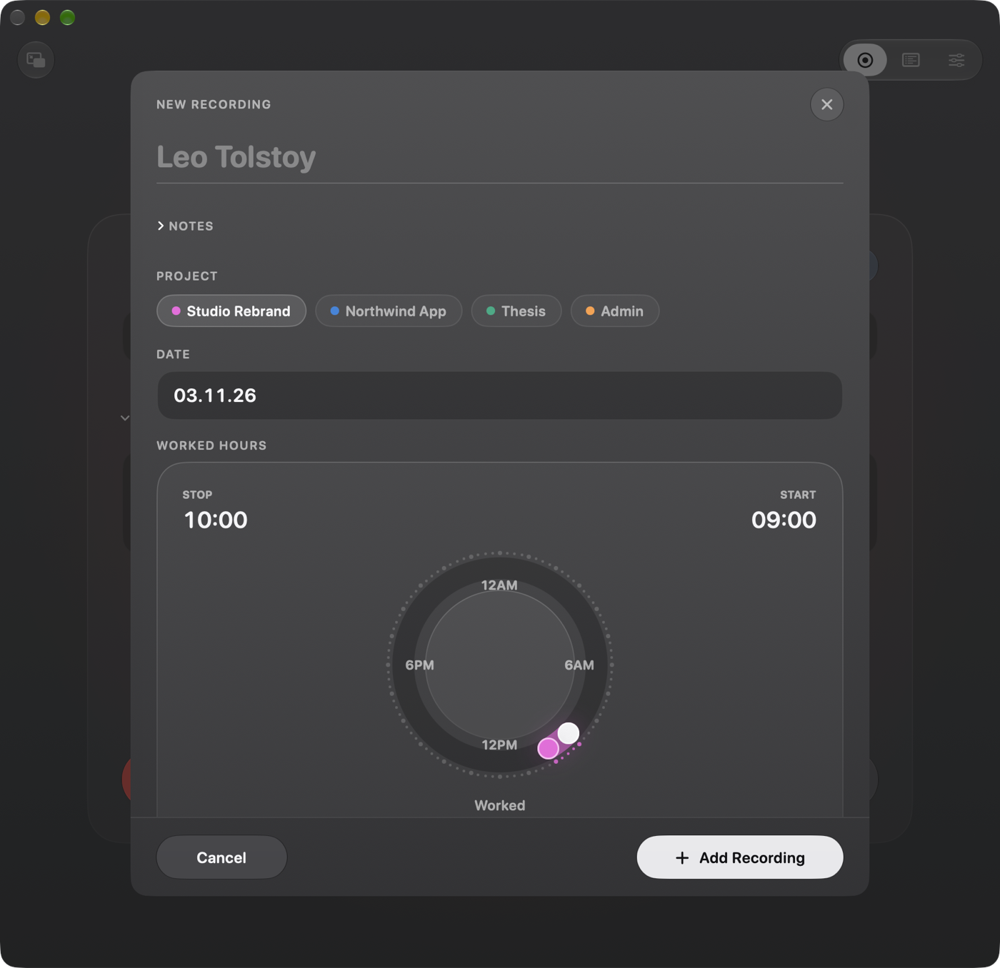
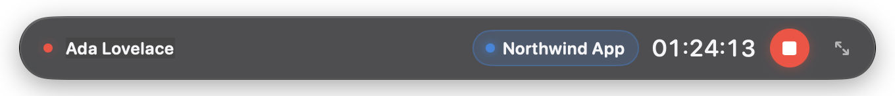

One click to start
Pick a project and press Start. A running recording keeps going if you quit, restart or update, and picks up where it was.
Time tracking for your Mac
TimeTracker is a time tracker for your Mac. Start a timer for a project, or add hours by hand, then see your week as a list or a calendar and export it as a PDF.
Free and open source · Version 1.1.1 · macOS 13 or later · Apple silicon and Intel

Features
Pick a project and press Start. A running recording keeps going if you quit, restart or update, and picks up where it was.
Shrink TimeTracker to a slim glass bar that floats above your other windows, with the clock, the project and Stop always in reach.
Forgot the timer? Double-click the day in the calendar, then drag the start and end around a 24-hour dial, in five-minute steps.
Every recording grouped by day with daily totals, or a month calendar tinted in your projects' colours. Filter by project in both.
Pick the days, and TimeTracker writes a clean PDF with every recording, its notes and its hours, ready to share. Days in your last export are marked.
No account and no cloud: your recordings stay on your Mac. Updates arrive signed by the developer and install in place.
Review
Recordings are grouped by day, newest first, with each day's total and the hours across all of them. A colour bar shows the project; click a recording to change it.

Plan
Switch to the calendar to see where the hours went. Days take on the colours of the projects you worked on; pick one to see its recordings underneath, or double-click it to add hours on that day.

Catch up
Name the recording, or leave it and TimeTracker picks a name. Choose the project and the day, then drag the two handles around the dial to when you started and stopped.

Mini player
Click the mini player button and the window shrinks to a glass bar that stays above everything else, on every Space.

How it works
Give it a name and a colour, and if you like, a few words on what it covers.
The clock runs until you press Stop. Add notes while you work, or switch projects.
See your recordings as a list or a calendar, fix any of them, and export the days you need as a PDF.
Install
Open the disk image and drag TimeTracker onto the Applications folder next to it.
TimeTracker isn't notarized by Apple, so macOS asks before it opens it. If you see a message that macOS couldn't verify TimeTracker, click Done, open System Settings › Privacy & Security, scroll down and click Open Anyway. You only do this once.
Click Create Project, then press Start.
Needs macOS 13 Ventura or later, on Apple silicon or Intel. Liquid Glass needs macOS 26 or later; earlier versions get a frosted blur instead.
FAQ
On your Mac only, in a database in ~/Library/Application Support/TimeTracker. PDF exports go to ~/Documents/TimeTracker/exported. TimeTracker has no account and sends your recordings nowhere.
TimeTracker looks for a new version when it starts, and once a day while it's open. When there is one, an Update button appears at the top of the window; click it and TimeTracker checks the update is signed by its developer, swaps itself for the new version and starts again. A recording that's running keeps going. TimeTracker › Check for Updates… looks right away.
Version 1.0 can't update itself yet, so download TimeTracker once more and put it in Applications in place of the old one. The new version copies your recordings over the first time it starts, and updates itself from then on.
Only to look for updates on GitHub. Turn that off with TimeTracker › Check for Updates Automatically or in Settings › Updates, and TimeTracker never goes online.
Yes: the mini player button in the top-left corner shrinks the window to a glass bar that floats above other windows and follows you across Spaces. The arrows on its right bring the full window back.
Drag TimeTracker from Applications to the Trash. To remove your recordings too, delete ~/Library/Application Support/TimeTracker.